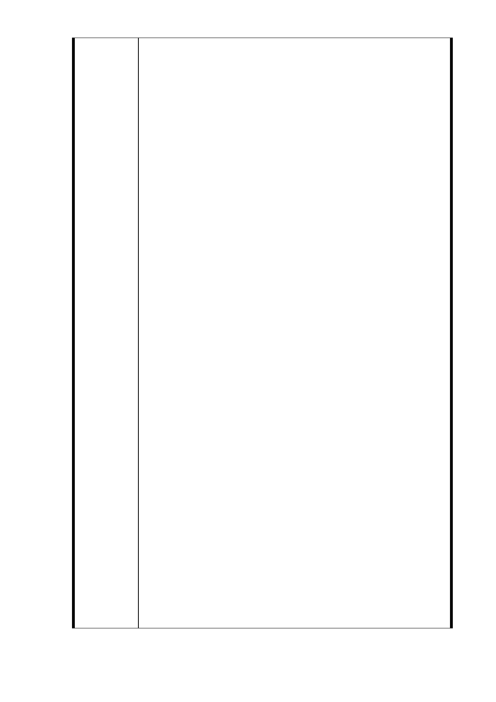

說明：
一、依台北市都市計畫委員會於 102 年 7 月 23 日以北市畫會
一字第 10230341700 號函通知有關召開上述「第四次專案小
組審查會議」事，提出陳情說明。
二、訴求主張：
1.「捷運局」強行將本地號土地納入「聯開案」之「非必要
性」：(1）參照「捷運信義線」及其他各線捷運站之設置，
無需以捷運「聯開案」之方式規劃，即可於路邊設置簡易捷
運站出、入口。(2）縱若該「R04 南側站」需以「聯合開發
案」方式進行，然於「捷運局」之原設計規劃中，並未將本
地號土地納入該站「聯開案」範圍，即可規劃實施。(3）另
台北市長郝龍斌於民國 100 年 8 月 26 日於信義區公所舉辦之
「市長與民有約」座談會中，曾再三詢問「捷運局」與會代
表，有關將該「351 地號」土地納入「聯合開發案」範圍內，
是否為「必要性」？「捷運局」與會代表均明確答稱：「非
必要性」。綜上所述：「捷運局」將本地號土地納入「聯開
案」為「非必要性」。
2.另就「都市更新」而言，本地號土地上之七層樓電梯大廈，
於民國八十年興建完成，未符「都市更新」之要件，且住戶
居住亦甚覺滿意，已多次表達不願參與「聯開案」之意願，
此有與「捷運局」數度開會作成之會議記錄可稽。
3.縱若「台北市都市計畫委員會」罔顧住戶訴求，而同意「捷
運局」將本地號土地納入「聯開案」，則應要求相關主管及
權責機關務必作出妥善、具體之回應，並以「專案」方式辦
理，以確保本地號住戶權益不受剝奪、減損，並作為本案審
理通過之必要條件，此亦為審理機關所應為「負責任」態度
之具體展現。
4.堅決反對「台北市都市計畫委員會」遽以：「有關住戶權
益分配訴求，非屬本會權責」之不負責任說詞搪塞，置市民
住戶權益於不顧。須知：「現今已沒有任何人（或單位）可
作出任何決定，而不需負任何相關責任」之事情存在，此即
「法治精神」之本旨。故相關權責機關或審理單位若作成任
何有害於當事人權益之決定，終必須承擔一切相關責任後
果，更不得相互推諉卸責。
5.強烈要求「台北市都市計劃委員會」應確保本地號既有七
層樓建物於當初核定 350％之獎勵容積權益，不被任意剝
奪、減損。同時應要求「捷運局」就相關「聯開案」所分得
之 50％額外捷運容積獎勵，完全回饋所有住戶居民。
6.「捷運局」所規劃之「聯開案」，係以「住戶出地，建商
出錢，捷運局監督」之合作模式進行，三方應基於公平、對
等之地位溝通協商。「台北市都市計劃委員會」並應要求「捷
運局」於作業過程中接受「地主住戶」之參與、監督，俾避
免任何可能之弊端發生。
7.本地號既有七層樓電梯大廈係於民國八十年興建完成，與
- 40 -